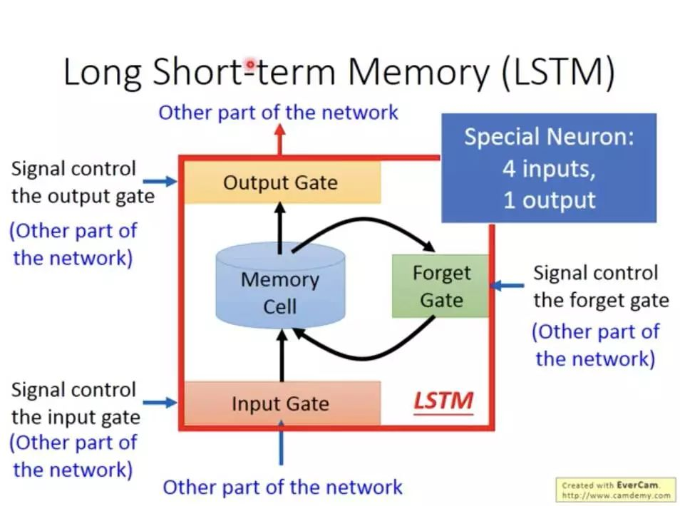

時間序列的預言者：如何通過 RNN、LSTM 和 GRU 預測未來
Table of Contents
1. CNN的限制
在卷積神經網路中，我們提過CNN的想法源自於對人類大腦認知方式的模仿，當我們辨識一個圖像，會先注意到顏色鮮明的點、線、面，之後將它們構成一個個不同的形狀(眼睛、鼻子、嘴巴 …)，這種抽象化的過程就是 CNN 演算法建立模型的方式。其過程如下圖1。

Figure 1: CNN 概念
至於圖片中的每一個特徵則是利用卷積核來取得(如下圖)，換言之，CNN其實是在模擬人類的眼睛。

Figure 2: CNN原理
萬一我們所要處理的資料並不是一張張的圖、而是一系列連續性、有時間順序的資料呢？例如：
- 一篇文章: 也許我們想生成這篇文章的摘要
- 一段時間內蒐集一的某地PM 2.5數值: 也許我們想預測該地下週的PM 2.5
- 一段演講錄音: 也許我們想生成逐字稿
你會發現，這類資料其實不太適合用眼睛，可能更適合用耳朵，所以拿CNN來分析這類資料大概是用錯了工具(相信經過理財達人競賽的你應該深有同感)。
那麼，哪一種模型比較適合模擬出人類的耳朵功能？這是本節的討論重點。
2. 遞迴神經網路(Recurrent Neural Networks, RNNs)
遞迴神經網絡（RNN）是一種專門設計來處理序列數據的人工神經網絡。序列數據指的是那些隨時間連續出現的數據，比如語言（單詞組成的句子）、影片（一連串的影像畫面），或者是音樂（一連串的音符）。
想像你利用每天晚上睡前花30分鐘追劇，每當新的一集開始時，你通常還會記得上一集發生了什麼。RNN也是這樣工作的：它在處理資料（例如一句話中的每個單詞）時，會記得之前的資訊，並利用這些資訊來幫助理解或預測下一步會發生什麼。
那RNN是如何做到這點的呢?這種“記憶”是通過網絡中的循環連接實現的。這些連接使得訊息可以在模型的一層之間前後流動，就像你在看連續劇時保持對劇情的記憶一樣。我們先來看圖3，右邊是我們熟悉的神經網路(例如CNN、DNN)，資料一律由模型的左側layer往右側傳送；而左邊的RNN則有點不同，每一層的神經元在將資料往右傳遞的同時，還偷偷留了一份給 自己 ，這裡說的自己不是真正的自己，而是 下一個回合的自己 。
/2024-05-10_08-43-10_RNN-03.png)
Figure 3: CNN v.s. RNN
聽起來好像有點抽象，沒關係，我們現在把圖3中左側RNN的某一個神經元單獨抽出來分解它的內部動作，我們把圖3中的那個循環的箭頭拆解成如圖4。
/2024-05-10_09-01-35_RNN-Cell-1.png)
Figure 4: RNN典型結構
要看懂圖4，你只要搞清楚三件事:
- RNN不像CNN那樣每次讀入一整張圖，而是分批讀入序列資料，例如，第1次(也就是第1個時間點(\(t_0\))讀入\(X_0\)、第2次(也就是第2個時間點(\(t_1\))讀入\(X_1\)…
- 圖中右側「展開後」的三神經元其實是同一個，分別代表不同時間點的神經元，我們可以由 \(h_{t-1}, h_{t}, h_{t+1}\) 和 \(X_{t-1}, X_{t}, X_{t+1}\) 觀察出同樣的意思。
- 原本常見的資料在模型中傳遞方向是由左而右，在圖4中則是由下而上，也就是輸入資料是底下的\(X_t\)、輸出為上面的\(h_t\)。
圖4右側代表的意思是：
- 在第1個時間點(\(t-1\))取得輸入(\(X_{t-1}\))後，神經元會針對 \(X_{t-1}\) 進行運算，更新自己的「狀態」(這個就是會影響「下一個自己」的關鍵)然後輸出結果\(h_{t-1}\)
- 在第2個時間點(\(t\))取得輸入(\(X_{t}\))後，利用剛才(時間點{\(t-1\))更新的「狀態」來運算\(X_t\)(這就是神經元受到上一個自己影響的來源，也被稱為「記憶」)，然後再次更新自己的狀態並輸出結果\(h_t\)
- 最後，在第3個時間點(\(t+1\))取得輸入(\(X_{t+1}\))後，利用剛才(時間點{\(t\))更新的「狀態」來運算\(X_{t+1}\)，然後再次更新自己的狀態並輸出結果\(h_{t+1}\)
整個資料讀取、處理、傳遞的流程大致如下圖所示：
/2024-05-10_13-00-27_Fully_connected_Recurrent_Neural_Network.webp)
Figure 5: RNN的運作流程
用個具體一點的例子，假設我們假設剛剛的序列 X 實際上是一個內容如下的英文問句：
1: X = [ What, time, is, it, ? ]
而且 RNN 已經處理完前兩個元素 What 和 time 了。
則接下來 RNN 會這樣處理剩下的句子：

Figure 6: RNN如何處理自然語言
如同我們由左到右逐字閱讀這段文字同時不斷地更新你腦中的記憶狀態，RNN也是以相同的原理在做這件事。RNN的這種設計使它特別適合於像語言翻譯、語音識別或任何需要考慮過去資訊以更好地理解當前情境的任務。例如，在翻譯句子時，理解前面的詞可以幫助更準確地翻譯後面的詞。
上面提及RNN的「記憶」能力是由神經元的「狀態」實作出來，這種狀態以一個隱藏向量(hidden vector)的形式存在於神經元中，如圖7中的\(h_{t}\))。
/2024-05-10_15-39-00_RNN-Cell-2.png)
Figure 7: RNN神經元
這個神經元在時間點t的輸出 \(h_t\) 由以下公式計算:
\[ h_t = f(W_x \cdot X_t + W_h \cdot h_{t-1} + b) \]
其中，
- \(X_t\): 這是在每個時間點(\(t\))輸入給神經元給 RNN 的資料，例如句子中的單字、圖像中的像素或時間序列中的資料點。
- \(h_{t-1}\): 先前的隱藏狀態(\(h_{t-1}\))，可以把它看成前一個時間點(\(t-1\))的網路記憶，就是它封裝了重要的歷史訊息，以舊有的記憶協助 RNN 理解當前的資料。
- 權重矩陣(\(W_t, W_h\) ): 這些矩陣是模型訓練的目的，可以將其視為模型的「知識」。它們決定了應該對當前輸入(\(X_t\)) 和過去記憶(\(h_{t-1}\) ) 的重視程度。
- 偏移值(\(b\)): 偏差項可作為模型的微調器，確保激活函數與資料的固有特徵協調運作。
- 激活函數(\(f\)): RNN常用的激活函數有tanh 或 ReLU，讓RNN具備非線性的特徵，以捕捉線性模型可能忽略的複雜資料模式。
但是，RNN也有一些限制，比如它們很難處理很長的序列，因為過長時間的記憶會逐漸消失。這就像如果你試圖回憶幾個月前看的某集連續劇的細節，可能會比較困難。這個問題在後來被一種叫做LSTM的更進階版本的RNN解決。
總之，RNN是一種強大的工具，專門用於處理和預測序列數據中的模式，就像我們用記憶來理解和預測日常生活中的事件一樣。
3. RNN實作
3.1. 概念
1: state_t = 0 2: for input_t in input_sequence: 3: output_t = f(input_t, state_t) 4: state_t = output_t
在 RNN 每次讀入任何新的序列數據前，細胞 A 中的記憶狀態 state_t 都會被初始化為 0。
接著在每個時間點 t，RNN 會重複以下步驟：
- 讀入 input_sequence 序列中的一個新元素 input_t
- 利用 f 函式將當前細胞的狀態 state_t 以及輸入 input_t 做些處理產生 output_t
- 輸出 output_t 並同時更新自己的狀態 state_t
在 Keras 裏頭只要 2 行就可以建立一個 RNN layer：
1: from keras import layers 2: rnn = layers.SimpleRNN()

Figure 8: RNN示例
4. LSTM
為了加強這種RNN的「記憶能力」，人們開發各種各樣的變形體，如非常著名的Long Short-term Memory(LSTM)，用於解決「長期及遠距離的依賴關係」。如下圖所示，左邊的小圖是最簡單版本的循環網絡，而右邊是人們為了增強記憶能力而開發的LSTM。

Figure 9: LSTM
面對一個如下的簡易RNN，要如何將神經元當下的記憶 state_t 與輸入 input_t 結合，才能產生最有意義的輸出 output_t 呢？
1: state_t = 0 2: # 細胞 A 會重複執行以下處理 3: for input_t in input_sequence: 4: output_t = f(input_t, state_t) 5: state_t = output_t
前節提及，RNN神經元在時間點t的輸出 \(h_t\) 由以下公式計算:
\[ h_t = f(W_x \cdot X_t + W_h \cdot h_{t-1} + b) \]
在 SimpleRNN 的神經元中，這個函數 \(f\) 的實作很簡單，這也導致了其記憶狀態 state_t 沒辦法很好地「記住」前面處理過的序列元素，因而造成 RNN 在處理後來的元素時，就已經把前面重要的資訊給忘記了，也就是只有短期記憶，沒有長期記憶。
長短期記憶（Long Short-Term Memory, 後簡稱 LSTM）就是被設計來解決 RNN 的這個問題。
4.1. LSTM的運作原理
想象你有一個書包（LSTM的內部結構），你可以決定在上課前放入什麼書籍、何時取出某本書，或者甚至決定更新裡面的某些書，你每天上學就利用書包裡的書來學習新的知識。LSTM也有類似的機制來處理信息，這些機制就是一個個的閘門(Gate)。
- 遺忘閘（Forget Gate）：這就像是你決定從書包中拿掉不再需要的書。在LSTM中，遺忘閘會查看新的輸入信息和當前的記憶，然後決定保留哪些記憶（有用的）或者遺忘哪些（不再重要的）。
- 輸入閘（Input Gate）：這是決定將哪些新書放入書包。LSTM會評估當前的輸入（例如新的單詞或數據點），並決定應該添加哪些信息到記憶中，這有助於更新記憶內容。
- 輸出閘（Output Gate）：決定從書包中拿出哪本書來使用。根據需要的話題或任務，LSTM會決定哪些記憶是目前有用的，然後基於這些記憶提供輸出信息。

Figure 10: LSTM架構
典型的LSTM架構如圖10所示，可以看出除了原本的資料輸入(input)，LSTM還多了三個輸入，分別是input(模型輸入），forget gate(遺忘門)，input gate(輸入門)，以及output gate(輸出門)。因此相比普通的神經網路，LSTM的參數量是它們的4倍。這3個門訊號都是處於0～1之間的實數，1代表完全打開，0代表關閉。
- 遺忘閘(Forget Gate)：該閘決定在特定時間點(timestamp, 例如圖11中的\(t\) )，前一個時間點(\(t-1\)) 的模型記憶(也就是狀態, state)是否會被記住保留參與這個時間點的運算，或是直接被遺忘。當遺忘門打開時，前一刻的記憶會被保留，當遺忘門關閉時，前一刻的記憶就會被清空。換句話說，就讓模型具備選擇性遺忘部份訊息的能力，這個機制可以由激活函數sigmoid來實作，其中0代表完全忘記，1代表完全記住。
- 輸入閘(Input Gate): 決定目前這個時間點有哪些神經元的輸入(\(X\))中有哪些是足夠重要到可以保留下來加入「目前狀態」中，因為在序列輸入中，並不是每個時刻的輸入的資訊都是同等重要的，當輸入完全沒有用時，輸入門關閉，也就是此時刻的輸入資訊被丟棄了。這個機制同樣也可以由sigmoid 激活函數來實作，sigmoid產生的值介於0到1之間，可以被看作是一個閘控信號，這個閘控信號和tanh函數生成的候選隱藏狀態相乘，確定了從候選狀態中將多少資訊添加到當前的單元狀態中。
- 輸出閘(Output Gate): 決定目前神經元的狀態中有哪一部分可以輸出(流向下一個狀態)，同樣由激活函數來sigmoid來決定，這個輸出會通過tanh函數來調整，因為Tanh能夠將單元狀態的值正規化到-1到1之間，這有助於控制神經網絡的激活範圍。再由Tanh來提供輸出權重。

Figure 11: LSTM運作原理
因為這樣的機制，讓 LSTM 即使面對很長的序列數據也能有效處理，不遺忘以前的記憶。因為效果卓越，LSTM 非常廣泛地被使用。事實上，當有人跟你說他用 RNN 做了什麼 NLP 專案時，有 9 成機率他是使用 LSTM 或是 GRU（LSTM 的改良版，只使用 2 個閘門） 來實作，而不是使用最簡單的 SimpleRNN。
4.2. 實作: 以AI預測股價-隔日漲跌
- 安裝相關套件
1: pip install yfinance - 下載股價資訊
1: import yfinance as yf 2: 3: df = yf.Ticker('2330.TW').history(period='10y') 4: print(type(df))
- 觀察原始資料/日K圖
1: import matplotlib.pyplot as plt 2: plt.clf() 3: plt.plot(data.Close) 4: plt.show()
- 將資料標準化
1: from sklearn.preprocessing import MinMaxScaler 2: scaler = MinMaxScaler(feature_range=(0, 1)) 3: sc_data = scaler.fit_transform(data.values) 4: 5: sc_data #變成numpy array
- 建立、分割資料
- 建立資料集及標籤
1: import numpy as np 2: 3: featureDays = 10 4: x_data, y_data = [], [] 5: for i in range(len(sc_data) - featureDays): 6: x = sc_data[i:i+featureDays] 7: y = sc_data[i+featureDays] 8: x_data.append(x) 9: y_data.append(y) 10: 11: x_data, y_data = np.array(x_data), np.array(y_data) 12: 13: print(x_data.shape) 14: print(y_data.shape) 15: print(len(x_data)) #全部資料筆數
- 分割訓練集與測試集
1: ratio = 0.8 2: train_size = round(len(x_data) * ratio) 3: print(train_size) 4: x_train, y_train = x_data[:train_size], y_data[:train_size] 5: x_test, y_test = x_data[train_size:], y_data[train_size:] 6: 7: print(x_train.shape) 8: print(y_train.shape) 9: print(x_test.shape) 10: print(y_test.shape)
- 建立資料集及標籤
- 建立、編譯、訓練模型
- 建立模型
1: import tensorflow as tf 2: #建構LSTM模型 3: model = tf.keras.Sequential() 4: # LSTM層 5: model.add(tf.keras.layers.LSTM(units=64, unroll = False, input_shape=(featureDays,1))) 6: # Dense層 7: model.add(tf.keras.layers.Dense(units=1))
1: model.summary() - 編譯模型
1: model.compile(loss='mse', optimizer='adam', metrics=['accuracy'])
- 訓練模型
1: model.fit(x_train, y_train, 2: validation_split=0.2, 3: batch_size=200, epochs=20)
- 建立模型
- 性能測試
- loss
1: score = model.evaluate(x_test, y_test) 2: print('loss:', score[0])
- predict
1: predict = model.predict(x_test) 2: predict = scaler.inverse_transform(predict) 3: predict = np.reshape(predict, (predict.size,)) 4: ans = scaler.inverse_transform(y_test) 5: ans = np.reshape(ans, (ans.size,)) 6: print(predict[:3]) 7: print(ans[:3])
- plot
1: plt.plot(predict) 2: plt.plot(ans) 3: plt.show()
- loss